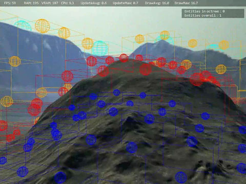
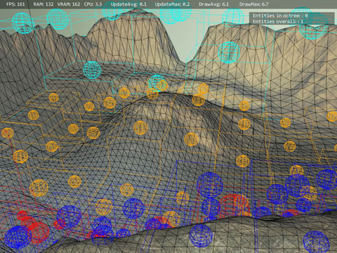
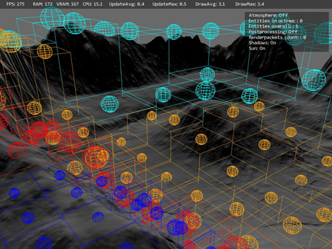
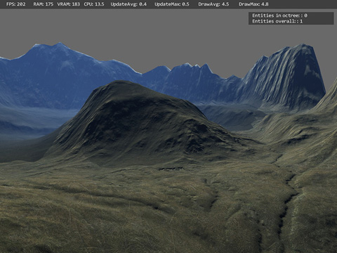
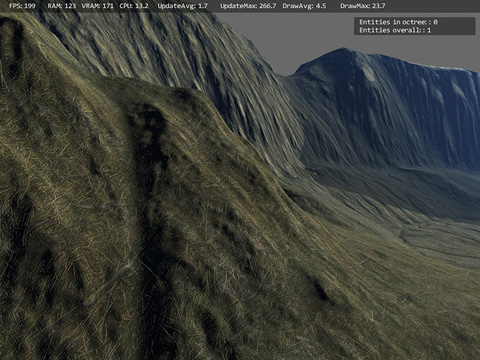
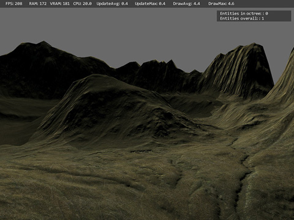
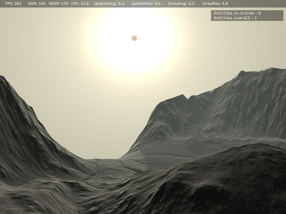
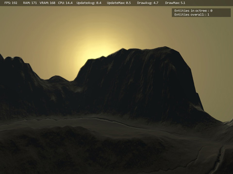
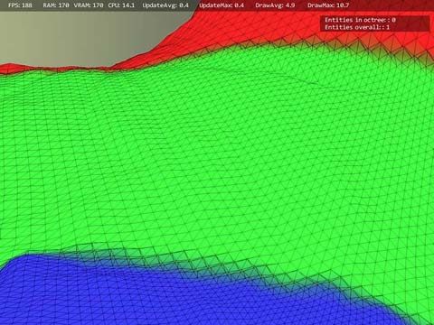

Amonsun is an outdoor environment renderer focused on terrain, sky, and atmospheric lighting. I implemented it in C++ using the Direct3D 11 API as an exploration of real-time rendering techniques for large-scale outdoor scenes.









Terrain rendering is based on the CDLOD (Continuous Distance-Dependent Level of Detail) technique. Terrain heights and normals are generated on the fly from a heightmap directly in the vertex shader using texture fetches. This approach allows the terrain to be modified dynamically at runtime without preprocessing.
Scene entities are organized in a dynamic octree, enabling efficient visibility determination. Rendering is further optimized using bounding box occlusion queries, complemented by a simple anti-portal system to reduce overdraw in complex scenes.
The terrain surface is textured using blended detail maps and normal maps to preserve visual fidelity across different viewing distances. The renderer uses forward rendering and currently supports a single light source — the sun. Sunlight casts shadows generated with shadow mapping and PCF filtering. While this solution performs well, it leaves room for future improvements, such as implementing cascaded shadow maps for better shadow quality over large terrains.
Atmospheric effects are inspired by the Hoffman–Preetham atmospheric scattering model. Light scattering is driven by the sun’s color and direction, subtly affecting terrain appearance and helping to integrate the environment into a cohesive outdoor scene.